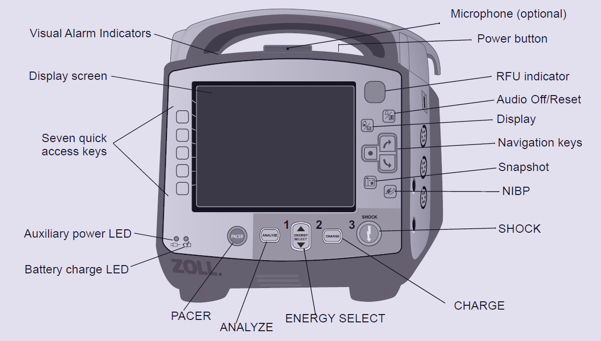
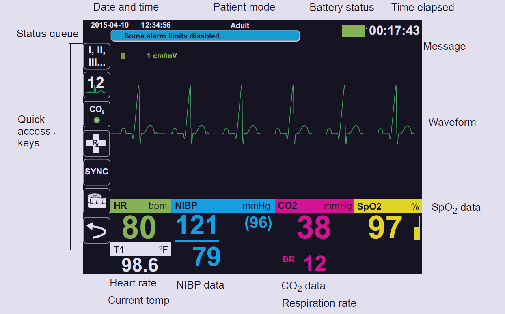
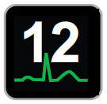
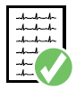
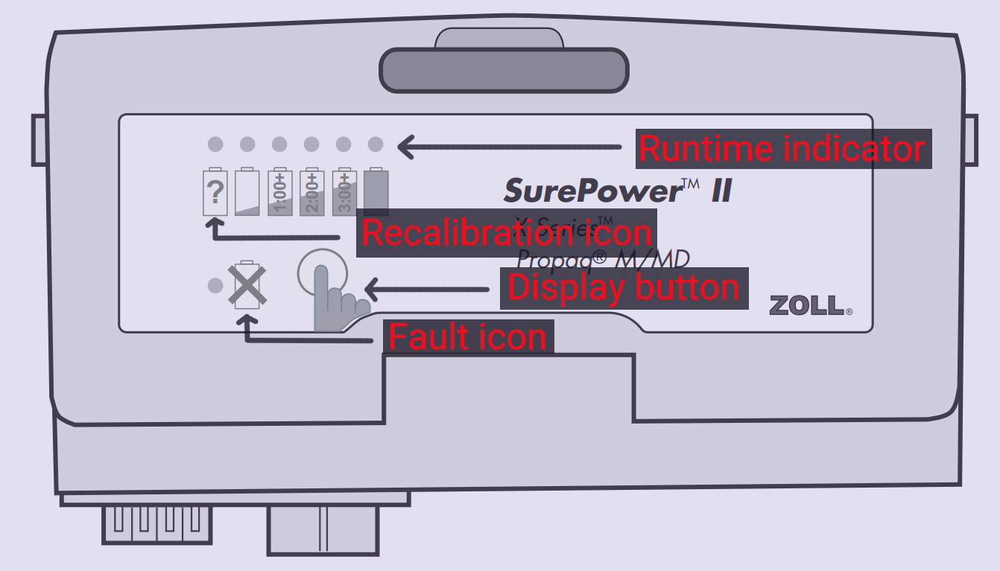
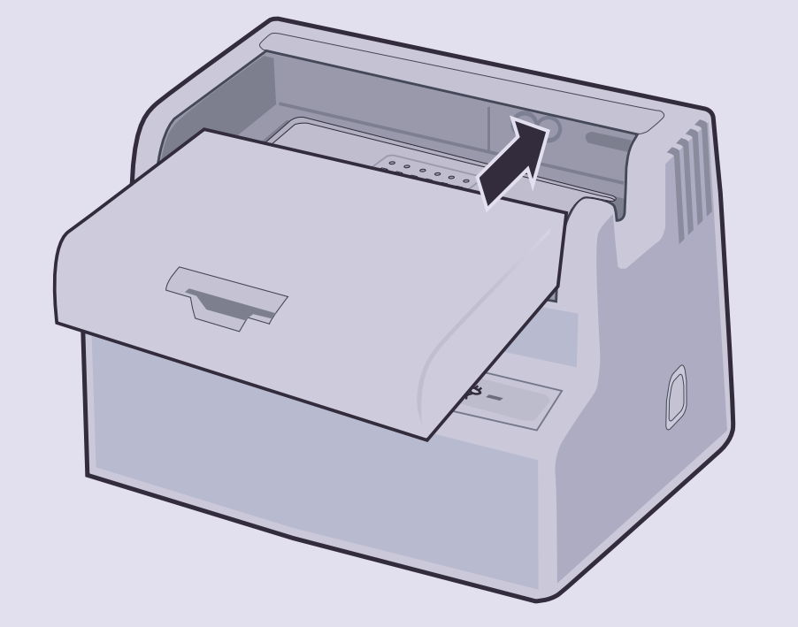
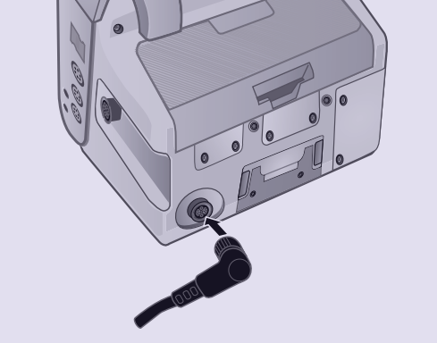
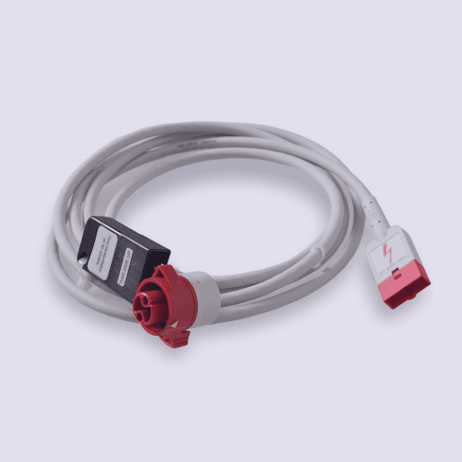
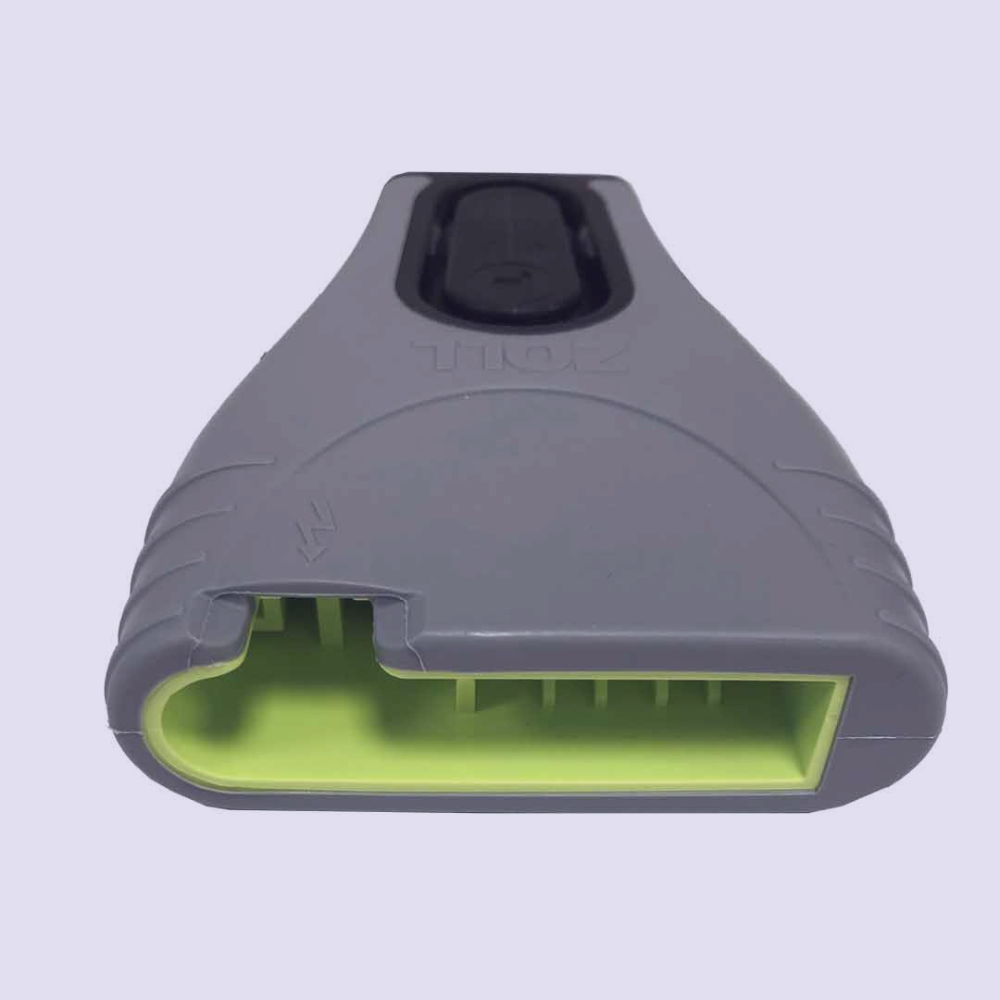

ZOLL X Series
Basic Information
Front Panel
Display Screen
First Parade Task
ZOLL Battery Check
ZOLL Power-on Test
Proficiency Requirement
General Troubleshooting
Item Checklist
ZOLL X Series
General Information
Front Panel

Display Screen

Quick Access Keys
12 lead

Displays the 12-lead monitoring screen.
Print
Starts or stops a continuous chart print.
Alarms
Displays the Limits option to allow the user to view/set all parameter
alarm limits.
Log

Opens the Log Control panel.
Setup
Displays the Setup menu to allow the user to access past readiness tests.
Treatment Summary
Displays treatment summary cases, which you can print.
Print Trends
Prints the trends that are displayed in the Trend Summary window.
Transfer Log
Transfers the current data in the log to a USB drive.
Acquire
the ECG input source for the first waveform trace.
Stop Acquisition
Stops acquisition of 12-lead data.
Patient Information
Allows you to enter information to accompany 12-lead data: patient
name, age, gender, and ID.
12-Lead Review

Reviews all your 12-lead captured data.
Transmit
Transmits 12-lead data.
First Parade Tasks
ZOLL Unit Check
- There should not be any presence of blood or bodily fluid stains on the unit.
- There should not be any presence of cracks on the unit.
- There should not be any presence of holes along the tubing or frayed cables.
- Buckles and zips should be able to be securely fastened.
- There should not be any wear and tear on the separate compartment.
- The unit should not be past the servicing due date.
ZOLL Battery Check

- There should be at least 2 ZOLL batteries charged to a minimum of 3hrs.
- The battery should be able to be charged in the ambulance using either a auxillary power cable or a charger dock.
Charging ZOLL batteries


Slide the battery pack into the open battery bay and press it firmly against the back of the charger until it clicks.
Align the white arrow of the auxiliary power cable with the white dot on the input connector on the back of the unit and push it in.
ZOLL Power-on Test
- Visual alarm indicators all light up when ZOLL is powering on.
- The RFU indicator shows “Do not use” when powering on and displays “Ready” after powering on.
- Display screen prompts “Self-Test Passed” on display screen after being powered on.
- The time and date of the ZOLL should be synchronised with the ACES MDT.
Ready For Use
The device is ready for use.
Do Not Use
- The battery is not properly installed. OR
- No battery is installed and auxiliary power is not present. OR
- A very low battery (below software shutdown limit) was installed. OR
- A critical self-test has failed.
ZOLL AED Check
- There should not be any presence of blood or bodily fluid stains on the cables.
- The cables should not be frayed and connectors should not be chipped.
- The self-test plug should be present.
- The defib pad packaging should be sealed and not expired.
- The Multifunction Cable (MFC) should be attached to the defib pad through the CPR Connector.


Multifunction Cable
CPR Connector
Defibrillator Short Test
- Connect the CPR Connector to the black self-test plug.
- Press the “Energy Select” button and select 30 joules
- Press the “Charge” button and allow ZOLL to charge.
- Press the “Shock” button when the button lights up in orange.
- Paste into the Defib Short Test strip to the checklist, write the necessary information and obtain a signature from the paramedic in charge.
ZOLL SpO2 Check
- Are the main trunk, adult and paediatric sensor cables all present?
- Is the portable SpO2 present? (Make sure the “Low Battery” icon is not flashing.)
- Are the cables clean and free from blood?
- Are there any frayed cables?
- Apply the SpO2 sensor to your finger and a reading should be displayed on the ZOLL screen. Repeat for both adult and paediatric sensors.
ZOLL NIBP Check
- Are there any frayed cables?
- Are the cables clean and free from blood and stains?
- Are all BP cuffs (sizes 9, 10, 11, 12) accounted for?
- Are there neonatal BP cuffs (sizes 1, 2, 3, 4, 5) and a compatible single-lumen BP hose inside the Maternity Bag?
- Apply BP cuff on self and perform BP measurement.
- Ensure there are no leakages on BP cuffs or cables.
ZOLL ECG Check
- Are there any frayed cables?
- Are the cables clean and free of electrode gel and blood?
- Are the cables neatly packed to prevent entanglement?
- Are electrodes attached to ECG leads for immediate use and spare electrodes pressent?
Transmission Test
- Go to the 12-lead ECG screen using quick access keys.
- Capture the empty screen using quick access keys.
- Press the “Transmit” button with the envelope icon.
- Transmit to “3rd Div Test”
- Ensure the screen displays “Transmission successful” and the green visual alarm indicator lights up.
Proficiency Requirement
Changing patient mode
- Turn on the ZOLL, navigate to and select the patient mode field.
- The default patient mode is set to “Adult”. Use the navigation keys to change the mode.
- Identify the appropriate patient mode based on age.
- Adult 🡪 > 12 years old
- Paediatric 🡪 29 days to 12 years old
- Neonate 🡪 ≤ 28 days
Recalibrating battery
- Place the battery into the charging dock.
- Press the Test button (hold up to 10s).
- Ensure the LED lights up over the “Test” icon.
- Leave it to calibrate for 12 hours (DO NOT REMOVE).
- Document on calibration monitoring sticker pasted on the battery.
Changing system date and time
- Turn on the ZOLL, navigate to and select the date and time field.
- Use the navigation keys to adjust the date and time.
- After setting the date and time, switch off the ZOLL unit for 2 minutes to allow the system to reset to a new treatment summary log.
Preparing chest and placing pads
- Shave any hair off the chest only for areas where defib pads will be placed.
- Dry the chest from any bodily fluids.
- Shift any necklace away from areas where defib pads will be applied.
- Remove any medicated patches.
- Place defib pads 4 fingers away from any pacemaker.
- Follow the instructions displayed on the defib pad packaging.
- Ensure the CPR indicator pad is on the bottom half of the patient's sternum. (Align the CPR indicator pad before applying the defib pads.)
- For patients less than 8y/o or weighing less than 25kg, use paediatric defib pads and make sure patient mode is set to paediatric.
Hazards of AED
- Wet surfaces/patient's body
- Metallic surfaces
- Flammable gases
Contraindications of AED
- Obviously dead:
- Rigor Mortis
- Livor Mortis
- Injuries incompatible with life: Decapitation, Transected Torso, Decomposition
- Obviously alive: Patient has pulse
Applying blood pressure cuffs
- Place the BP cuff 2-3 cm above the elbow.
- Position the “Artery Index Marker” over the brachial artery and wrap the cuff around the arm.
- Ensure the cuff is of the correct size: The artery index line should fall within the range shown on the outside of the cuff
- Suitable locations to take BP from:
- Adult: Upper arm
- Paediatric/neonatal: Thigh/upper arm
- Able to avoid taking BP on arms with the following factors:
- AV fistula
- Stroke: avoid weaker arm
- IV infusion/presence of IV cannula
- History of breast cancer/lymph node removal
Setting automatic interval BP
- Use navigation keys to select the NIBP field on the screen
- Select “NIBP mode” 🡪 Select “Auto” 🡪 Up/Down arrow
- Select “NIBP Auto Mode Interval” 🡪 Select the appropriate timing
- Stable patients: 15min
- Unstable patients: 5min
Viewing past NIBP/SpO2 readings
- Press the “Display/Home” button to display the Trends window.
- Highlight the “Navigate here to scroll through trends” field at the bottom of the Trends window, then press “Select”.
- Use navigation keys to scroll through past readings.
Printing trend summary
- Press the “Back” button on the bottom left of the screen
- Press the “LOG” button
- Press the “Print Trends” button and select the trend to print.
Performing 12-lead ECG
- LA/RA: below collar bone, meaty area
- LL/RL: below ribcage, away from stomach
- V1: 4th intercostal space, right sternal border
- V2: 4th intercostal space, left sternal border
- V4: 5th intercostal space, midclavicular line
- V3: in between V2 and V4
- V6: 5th intercostal space, mid-axillary line
- V5: in between V4 and V6
- Place limb and chest leads onto the patient.
- Connect the 12-lead cable to the 4-lead cable in the correct orientation.
- Select the 12-lead monitoring screen.
- Input patient information using quick access keys.
- Instruct the patient to stay still for the 12-lead snapshot.
- Acquire the 12-lead snapshot when ECG stabilises.
Transmitting ECG to hospitals
- Follow the same steps from the Transmission Test, except choose the desired hospital instead of “3rd Div Test”
Changing lead displayed on screen
- Use the “Lead” quick access key to toggle between all leads
- Alternatively, use navigation keys to select the “Lead” field to change the lead displayed.
General Troubleshooting
Troubleshooting SpO2 errors
- “Check Sensor”:
- The sensor is not connected to ZOLL
- Poor contact between the sensor and finger
- Factors that could cause inaccurate readings:
- Cold fingers: Rub to warm up
- Nail polish: Place sensor sideways
- CO/CN poisoning: Nil
- Movement of fingers: Hold to stabilise
- Poor perfusion: Avoid taking BP on the same side
Troubleshooting BP errors
- Inaccurate BP, showing the artefact sign. Common causes:
- Movement
- Incorrect cuff size
- “Reading Failed” 🡪 ZOLL is unable to detect blood pressure (Readjust cuff OR check radial pulse)
- “Air Leak” 🡪 Check for leak on BP cuff, hose, and points of connection
Troubleshooting ECG errors
- “Lead fault”:
- Lead is detached from or in poor contact with the patient's body.
- ECG cable is detached.
- Artefacts/Shaky ECG lines:
- Patient is moving: Avoid placing 4-lead on the body for breathless patients
- Poor contact between the electrode and patient's body due to sweat, hair, air pockets, or the lack of gel
- Movement of cables due to wind
- Leads are placed inaccurately onto bony regions of the patient's body
Troubleshooting failed transmission
- Going to an open space to transmit
- Change the modem's extension cable
- Connect the modem directly to the ZOLL
- Check if the SIM card is present inside the modem
- If the problem persists, inform the paramedic in charge and Equipment IC, then submit the Equipment Service Report accordingly